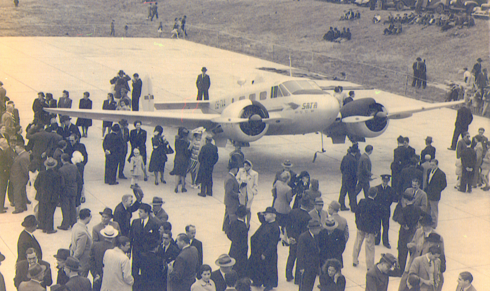
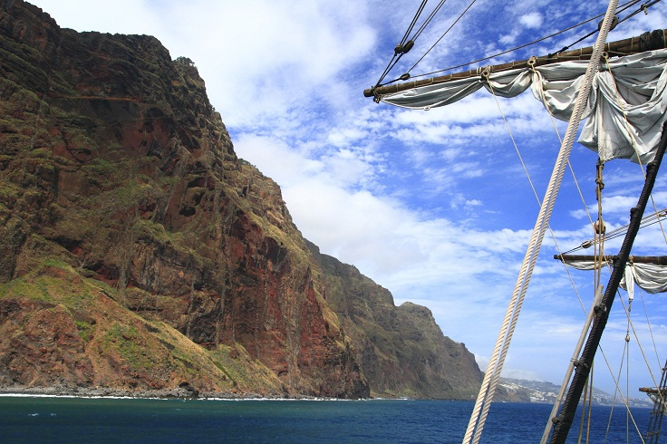
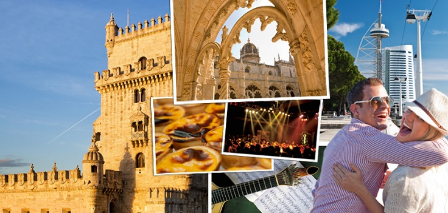
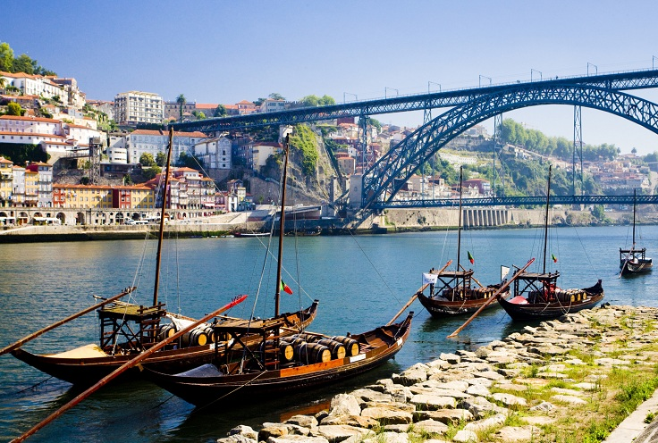
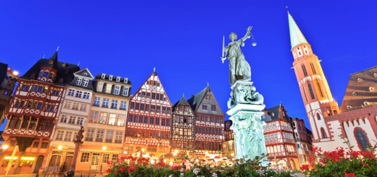
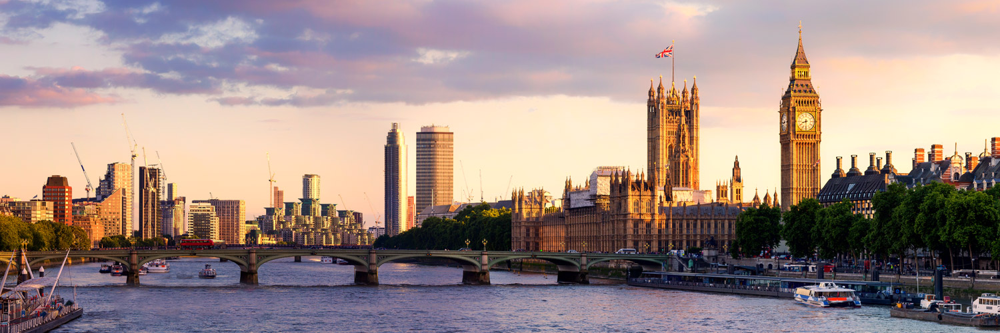
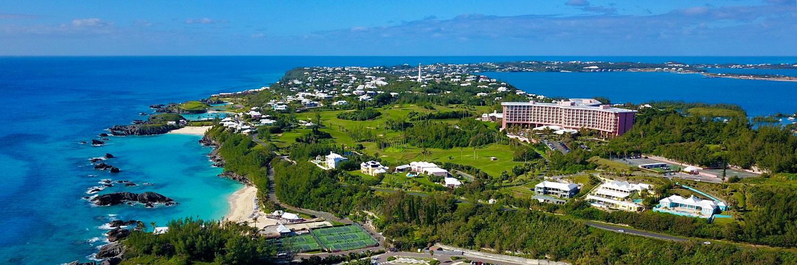
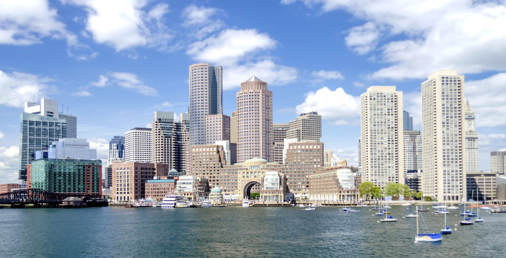
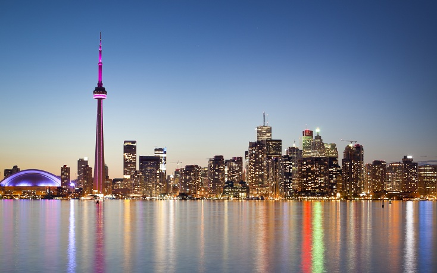
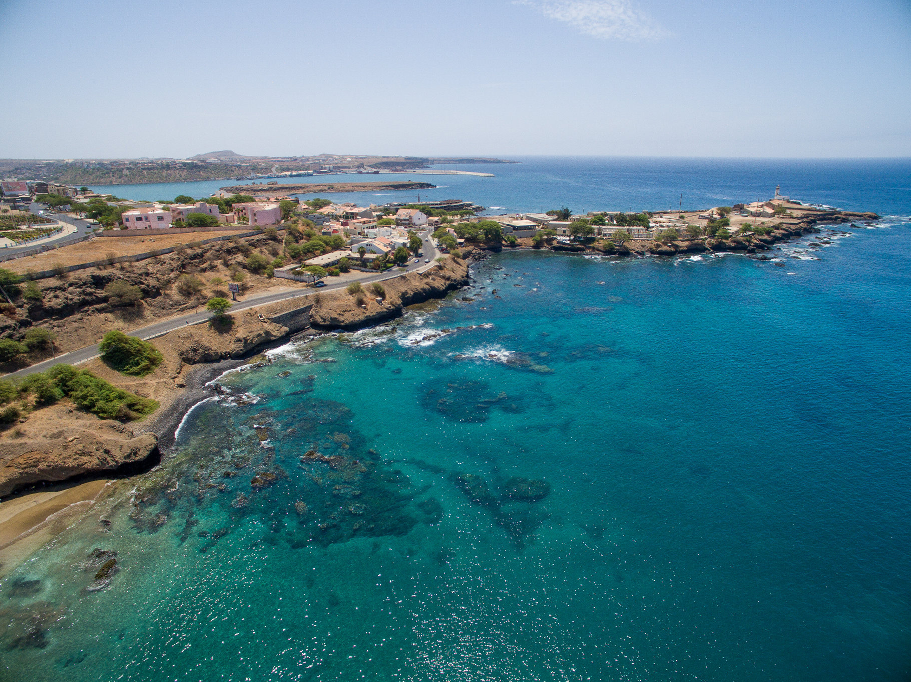

|
A Azores Airlines faz parte do grupo SATA, fundada nos Açores em 1941 e com mais de sessenta anos de voos e setenta de História, é a mais antiga companhia aérea portuguesa. Com cinco empresas na sua composição - duas transportadoras aéreas, dois operadores turísticos e uma entidade gestora dos aeródromos do Arquipélago dos Açores – o Grupo SATA tem-se afirmado como uma companhia aérea internacional que abraça a missão de construir pontes atlânticas entre os Açores e o mundo. Atualmente a SATA opera uma vasta rede de rotas regulares, nacionais e internacionais, desempenhando um papel fundamental no desenvolvimento económico e social da Região Autónoma dos Açores. |
|
Foi constituída a 21 de agosto de 1941, em Ponta Delgada, tendo como sócios José Bensaúde, Augusto d’Athaide Corte Real Soares de Albergaria, Albano de Freitas da Silva Oliveira, Augusto Rebelo Arruda e a Bensaúde e Companhia Lda., representada por António de Medeiros e Almeida.
A sua missão era, tal como hoje, servir os açorianos, quebrar o seu isolamento e encurtar distâncias entre as ilhas e destas para o resto do Mundo.
Em 1947, a Sociedade de Estudos Aéreos alterou a sua designação comercial para Sociedade Açoreana de Transportes Aéreos Lda. (SATA), devido à conclusão dos estudos que deram lugar à constituição da mesma; ao facto de o governo português ter entretanto concessionado à SATA, ainda que a título provisório, as ligações aéreas entre as ilhas de São Miguel, Santa Maria e Terceira; às condições internacionais que, com o fim do conflito mundial, possibilitavam a realização de tal empreendimento; e à cedência, em 1946, da infraestrutura localizada em Santa Maria ao Governo Português para exploração civil. Os sócios designaram gerente-delegado da SATA o Dr. Augusto Rebelo Arruda, sedearam os escritórios da empresa na Rua dos Mercadores, 7-11 e adquiriram a sua primeira aeronave, um Beechcraft UC-45B Expeditor.
Os Açores passariam a dispor de uma companhia aérea própria, a mais antiga do país em continuidade de operação, colocada ao serviço da unidade e do desenvolvimento económico de todos os açorianos.
Como é de se esperar de uma companhia aérea açoriana não pode faltar a Ilha dos Açores
como destino.
Se
pretende uma viagem enriquecedora, da qual nunca se irá esquecer, os Açores são o seu
destino.
Tambem não pode faltar a sua melhor companheira vizinha e companheira desde sempre, a Madeira, onde ficará a conhecer Funchal e Porto Santo.
Pode visitar também a capital de Portugal, Lisboa, onde conhecerá a bela história de Portugal.
Aproveite e viaje até ao Porto com a companhia da Azores/SATA, onde conhecerá as tradições desta bonita cidade.
Como é uma companhia aérea que faz voos para diversas partes do mundo, a Azores faz viagens para outros cantos da europa, vai até a Alemanha, Londres e Paris.
|  |  |
Como destino no continente Americano temos três destinos diversos, Bermudas, Boston e Toronto.
|  |  |  |
A Azores Airlines leva-nos a conhecer a maior lilha de Cabo Verde, a Ilha de Santiago, dando-nos assim uma porta aberta para conhecer esta bela ilha.
